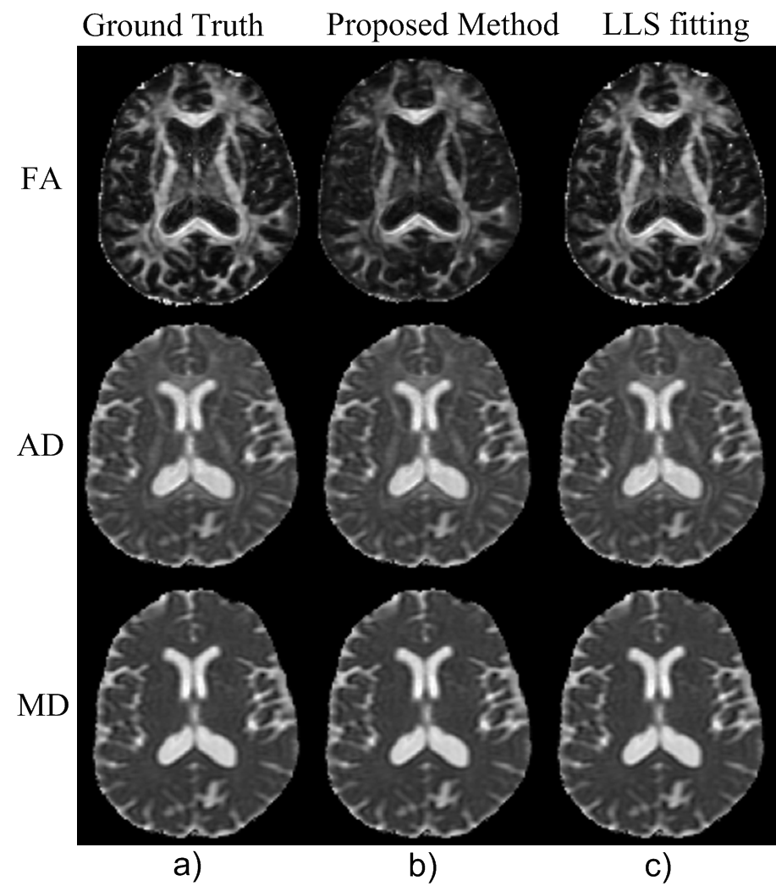
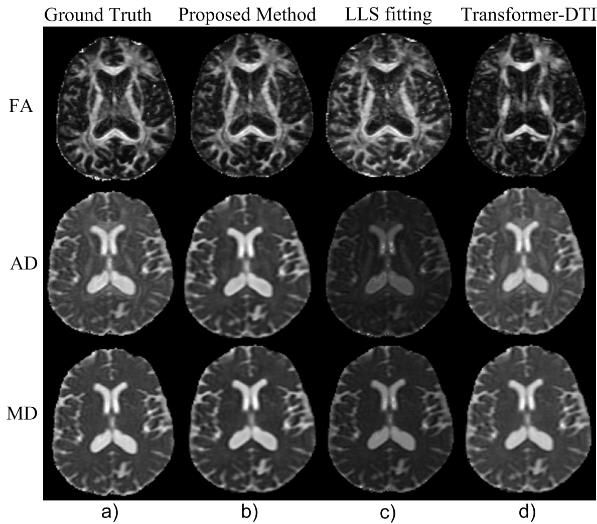
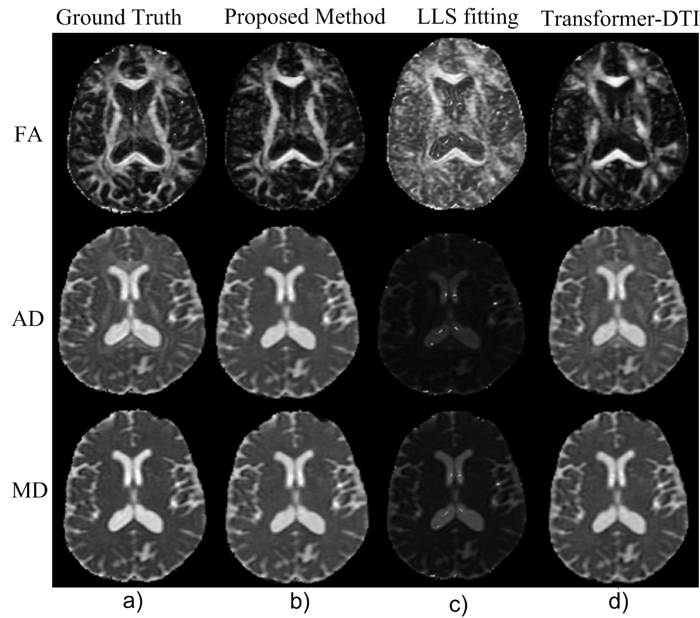
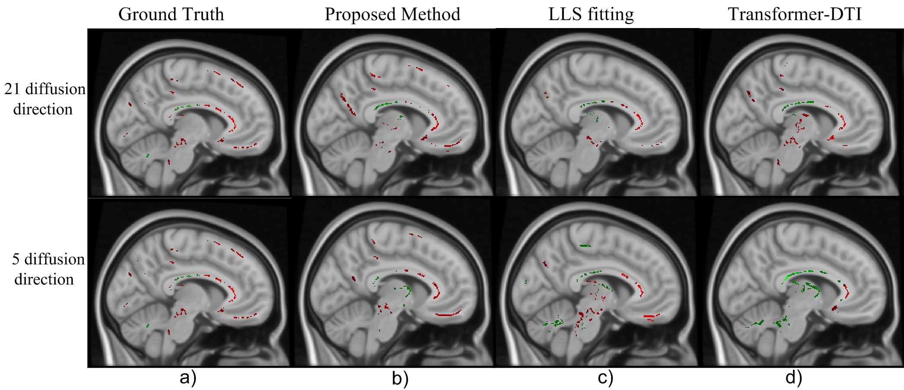
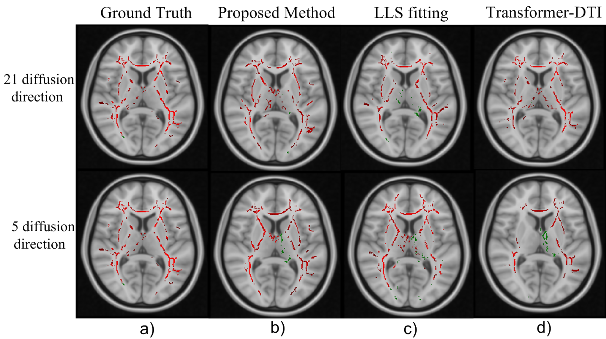

- Alzheimer's Disease affects 55M+ globally; DTI white matter biomarkers precede cognitive symptoms by years, but clinical DTI demands 40+ gradient directions ≈ 3-hour scans.
- Elderly and cognitively impaired patients cannot sustain long scan sessions — existing protocols are inaccessible for the population that needs them most.
- Linear least squares (LLS) reconstruction fails with fewer than ~20 directions due to noise amplification; a learning-based approach is needed to unlock sparse DTI.
- A model that produces diagnostic-quality FA/AxD/MD maps from 5–21 directions enables faster, more accessible AD screening in clinical settings.

Pipeline: b=0 + sparse b=1000 DWI (5 or 21 directions) → Patch Partition (16×8) → 5 Swin Transformer Blocks with varied window/shift sizes → 6 parallel Dense Layers, each predicting one diffusion tensor component (Dxx, Dxy, Dyy, Dxz, Dyz, Dzz) → FA, AxD, MD maps. Each block uses shifted window multi-head self-attention (SW-MSA) + LayerNorm + MLP.
- Swin-Transformer adapted for quantitative DTI estimation from 5 and 21 gradient directions — shifted-window attention captures local voxel correlations across patch boundaries, enabling generalisation across varying direction counts with a single model.
- Physics-informed loss enforcing positive-definiteness of the estimated diffusion tensor, preventing implausible anisotropy patterns and ensuring biophysical coherence in clinical reconstructions.
- 50%+ scan time reduction while maintaining FA, AxD, MD accuracy; proposed method outperforms both LLS fitting and Transformer-DTI at 5 and 21 directions on the ADNI dataset.
- TBSS analysis on ADNI identifies statistically significant white matter degradation in the Cingulum and Uncinate Fasciculus — two tracts known to degenerate early in AD — providing interpretable tract-level biomarkers from sparse acquisitions.

41 directions (full protocol): Proposed method (b) matches ground truth (a) and is comparable to full LLS fitting (c) — validating the model before testing sparse regimes.

21 directions: Proposed outperforms LLS fitting and Transformer-DTI. FA structure well-preserved with half the directions.

5 directions: Proposed surpasses both LLS and Transformer-DTI. LLS produces severe artefacts at this regime; our model recovers clean FA/AxD/MD maps.

Cingulum: Axial slice showing significant FA reductions (CN > MCI in red, CN < MCI in green). Proposed recovers cingulum pattern from sparse data.

Uncinate Fasciculus: Coronal slice revealing temporal lobe white matter degradation linked to early AD memory impairment.